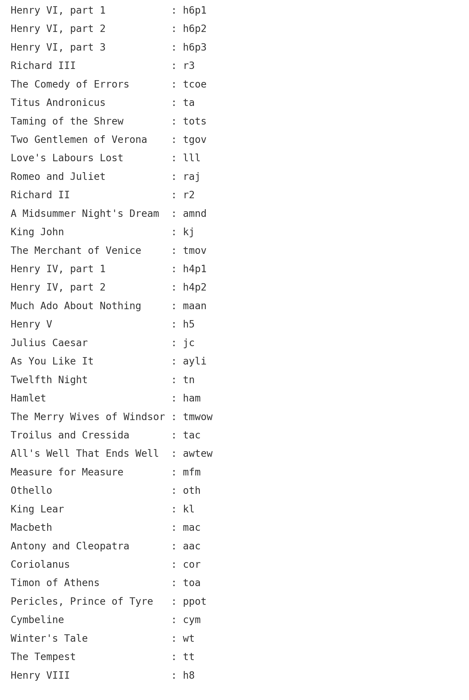

My digital historical unessay is about “Verifying the Authorship of William Shakespeare’s Plays by Stylometry”.
Stylometry means the application of the study of linguistic style. William Shakespeare wrote many works in his lifetime, and the amount is so vast that questions arise as to whether he could write them all alone.
One of the most common applications of stylometry is in authorship attribution. Given an anonymous text, it is sometimes possible to guess who wrote it by measuring certain features. In previous studies, they focused on authorship attribution of Shakespeare’s plays, analyzing the contributions of Shakespeare and other writers. However, in my unessay, I want to concentrate on observing how different his plays vary in writing style, and how did his style change in time.
Stylometry is the quantitative study of literary style through computational distant reading methods. It is based on the observation that authors tend to write in relatively consistent, recognizable and unique ways. Especially, the ways in which writers use small function words, such as articles, prepositions and conjunctions, has proven particularly telling. Function words have also been identified as important markers of literary genre and of chronology.
There are various approaches to studying stylometry. I want to focus on the algorithmic approach in my unessay, the method called the word adjacency network. We cannot explain in psychological, or artistic terms just why various words cluster with other words. We can, however, capture for different texts just how far from one another they tend to place each of a large set of preselected words (“target words”) in which we are interested. It turns out that the habits of placement, that is, the choices of words and how far from one another they are placed vary enough from text to text. This idea will be a reliable test for identifying similarity for my unessay.
A word adjacency network (WAN) is a mathematical system, a Markov chain, that represents the proximities of certain words within a text. Given a list of words-of-interest, a text to process, the algorithm will record in a Markov chain, as a matrix, the averaged distances at which each of the words-of-interest is found from each of the others. I assumed that the habit of placing certain function words near to other function words is an authorial characteristic that varies from one writer to another in a distinctive and relatively consistent way.
The comparison of a WAN derived from one text, and the WAN derived from another text, is a comparison of differing probability distributions. For this comparison the standard measure from information theory known as Kullback-Leibler divergence, more colloquially, relative entropy may be used. When comparing the relative entropy between WANs from multiple texts, the lowest values tend to be in similar structure. This fact is exploited in application of the WAN method to my unessay, we can examine which plays of William Shakespeare’s has similar structure, and classifying his work according to how style has changed as time goes on and by other features.
As the time goes on, I will analyze his work and visualize them with images, especially using heat maps of values of the relative entropies. A heat map is a 2-dimensional data visualization technique that represents the magnitude of individual values within a dataset as a color. I will create a GitHub web page with a description and code of the project. Also, I am going to visualize my data with heat maps and various python libraries. Through my unessay, I look forward to filling the gap between literary research and data science, providing a wider perspective on Shakespeare’s contribution to literature and history.
Compared to his status in English literature, not much is known about William Shakespeare's own life. Since Shakespeare's life information is very limited, the introduction of computer science allows a thorough and systematic analysis of research. With the lack of historical data on Shakespeare, it is very important to deduce indirectly the life or creative process through his work. In this process, computer science can provide new ideas through various tools.
Authorship of William Shakespeare is an active area of research. However, previous studies did not make sufficient research on Shakespeare's plays, such as just analyzing the contributions of Shakespeare and other writers. So, I wanted to focus on another research area, find out how similar Shakespeare's plays were in writing style.
Therefore, my main question of my work will be “How different William Shakespeare’s plays varies in his writing style, and how did his style change in time?”. I will proactively use and apply some computer science techniques in my work.
My work aims to provide a new view of Shakespeare's study through an algorithmic approach. By analyzing Shakespeare's works, using the word adjacency network, the limitations of existing literature can be overcome, and new avenues of research can be opened.
First, the literature of Shakespeare's existing studies has some limitations and has been based mainly on traditional methods of literary analysis. It is difficult to make an objective analysis due to the personal opinions and interpretations of literary critics and is inefficient in terms of time and effort to analyze Shakespeare's vast text one by one.
Furthermore, it is difficult to identify hidden patterns because there are no tools to systematically compare similarities between works. To overcome these limitations, analyses using digital methods, especially the word adjacency network, have many positive effects. Through statistical algorithms and methods, consistent analysis is possible, and allows the rapid processing of large amounts of text data using computer science technologies. In addition, relationships in the text and theoretical measurements of information enable subjective similarities to hidden language patterns to be identified.
My unessay offers new opportunities to study Shakespeare. Analyzing the changes in the similarities of works as time goes on, we can understand the changes in Shakespeare's plays by times and through the unusual patterns found in certain works, might clarify whether he has collaborated with other authors. It also helps understand and visualize complex data more intuitively to create new hypotheses.
I made complex data more intuitive through visualization. The large amount of data generated can be easily identified through multiple processes and visualizations, which helps to establish and verify new hypotheses. For example, visualizing the similarities between Shakespeare's works can clearly show how Shakespeare’s works have changed over time.
I also visually expressed similarities between Shakespeare’s plays, changes in time and patterns and provide research results in the form of a website so that users can interact directly with the data and explore the results of the analysis.
Below is the heatmap of relative entropies between William Shakespeare's plays:

Below is the 3D plot of relative entropies between William Shakespeare's plays:

To observe how different each Shakespeare play is, type abbreviation of the play you want to see in the box below.
An abbreviation for each play(Listed by decade):

Scholars who study Shakespeare usually classify Shakespeare's 37 plays into four periods depending on the time of creation.
The First Period
The first period was a period of study (1590-1594), during which he mainly wrote historical dramas and comedies. This period was a process of imitation of old writers and search for one's own. There are eight works in this period: Henry IV, parts 1-3, Ricahrd III, The Comedy of Errors, Titus Andronicus, Taming of the Screw, and Two Gentlemen of Verona.
The Second Period
The second period was the growth period (1595-1600), further expanding the previous comedy world. There are thirteen works in this period: Love's Labours Lost, Romeo and Juliet, A Midsummer Night's Dream, King John, The Merchant of Venice, Henry IV, part 1~3, Much Ado About Nothing, Henry V, Julius Caesar, As You Like It, and Twelfth Night.
The Third Period
The third period was during the period of King Sook-gi (1601-1607). This period was an era when great tragedies were created intensively. There are nine works in this period: Hamlet, The Merry Wives of Windsor, Troilus and Cressida, All's Well That Ends Well, Mearure for Measure, Othello, King Lear, Macbeth, and Antony and Cleopatra.
The Fourth Period
In the fourth period (1608-1613), Shakespeare tested a new genre of non-comedy. There are seven works in this period: Coriolanus, Timon of Athens, Pericles, Prince of Tyre, Cymbline, Winter's Tale, The Tempest, and Henry III.
Based on this fact, let's analyze the similarity of Shakespeare's plays over time.
The change in relative entropy over time could not be analyzed significantly. It is easy to see how different a specific play is from the play for each play.
In the graph analyzing the relative entropy of Henry VI, part 1 with other plays, it was confirmed that the relative entropy values of Henry VI, part 2 and part 3 used at almost the same time and numbered differently were significantly lower.
In addition, when analyzing several graphs, it was confirmed that relative entry values of historical dramas such as Henry IV, V, VI, and King John were all generally low and had structural similarities. Surprisingly, it was confirmed that relative entry values for each genre form a cluster in comedy and tragedy genres, not limited to historical dramas.
I have asked my historical question to ChatGPT. The answer from the machine is as follows.
Santiago Segarra, Mark Eisen, Gabriel Egan and Alejandro Ribeiro. "
Attributing the Authorship of the Henry VI Plays By Word Adjacency."
Shakespeare Quarterly
vol. 67 (2016): 232-56
Paul Brown, Mark Eisen, Santiago Segarra, Alejandro Ribeiro, and Gabriel Egan. "
How the Word Adjacecny Network (WAN) Algorithm Works."
Digital Scholarship in the Humanities
37 (2022): 321-355